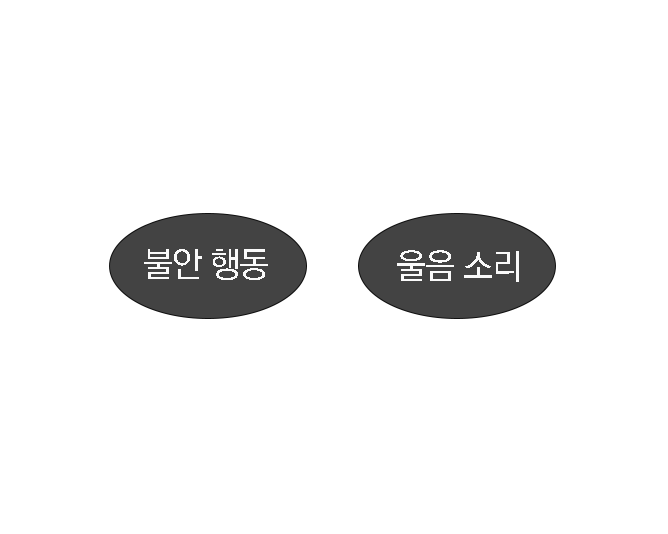
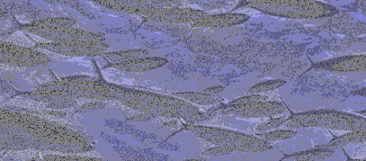
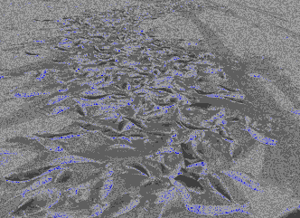

metallic mineral>>>electric powerunderground water
meterialcausebe chagrined
02 세로토닌 호르몬지진이 일어나기 전 지구 표면에서는 지구 안에서 지진을 일으키는 힘 때문에 엄청난 압력이 생긴다.
지구 표면에 생기는 이 압력은 지층 속에 있는 금속 광물을 자극 해서 전기 에너지를 일으키고 이 전기 에너지는 지하수를 전기분해하는 데 쓰인다. 이 기체들이 동물들의 신경 호르몬인 세로토닌 분비를 활발하게만든다.
세로토닌이 한꺼번에 많이 나오면 동물들이 흥분해서 불안정한 행동을 만들게 된다.
또한 수면 조절이나 식욕 및 행동 등 여러 신체 활동에 관여하는 뇌의 신경전달물질인 세로토닌은 기분이나 두려움, 기타 전반적인 감각에서 중요한 역할을 하는데, 세로토닌의 저하는 우울증과 같은 정신 질환에도 영향을 미친다
about
지진이 일어나기 6시간 전 지표면에 강한 중력이 작용하면서 암석에 전기가 일어난다. 전기는 갈라진 바위 틈새로 흘러 들어가 지하수를 분해하면서 ‘에어로졸’이라는 수증기를 만들어 낸다.
이 수증기가 지표면 위로 올라와서 민감한 신경을 가진 동물들을 자극하여 세로토닌이라는 호로몬이 분비되도록 한다.
세로토닌이 많이 분비되면 극도로 흥분을 하거나 헛것이 보이는 증상이 나타난다. 즉 지진이 일어나기 전 동물들은 이러한 이유로 인해 이상증세를 드러낸다.

이상 증상 abnormal symptoms
어류fishes
Nervous
8.21
Running away
-2.62
Group behavior
-10.21
Crying
4.80
Exited
1.38
Misc
0.61
Slow to react
-3.23
Eating
0.54

about
어류(Fishes)에서는 도망행동(Running away), 집단행동(Group behavior), 행동둔화(Slow to react)에 관한 이상행동이 다수 목격되었음을 알 수 있다. 다시 말하면 수중생물이 수면에 출몰(Water creatures come up to the surface), 평소의 배로 잡힘(Much more caught)과 같은 이상행동이 어류에서 주로 보인다는 것이다.

이상 증상 - 목격시기
Just before
Slow to react
Crying
1-day — 6-day
Crying
Group behavior
어류(Fishes)에서는 지진발생 6시간(6-hour)전에 집단행동(Group behavior)이 대다수 발생한다.